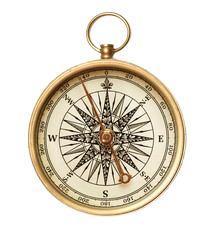
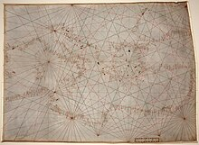
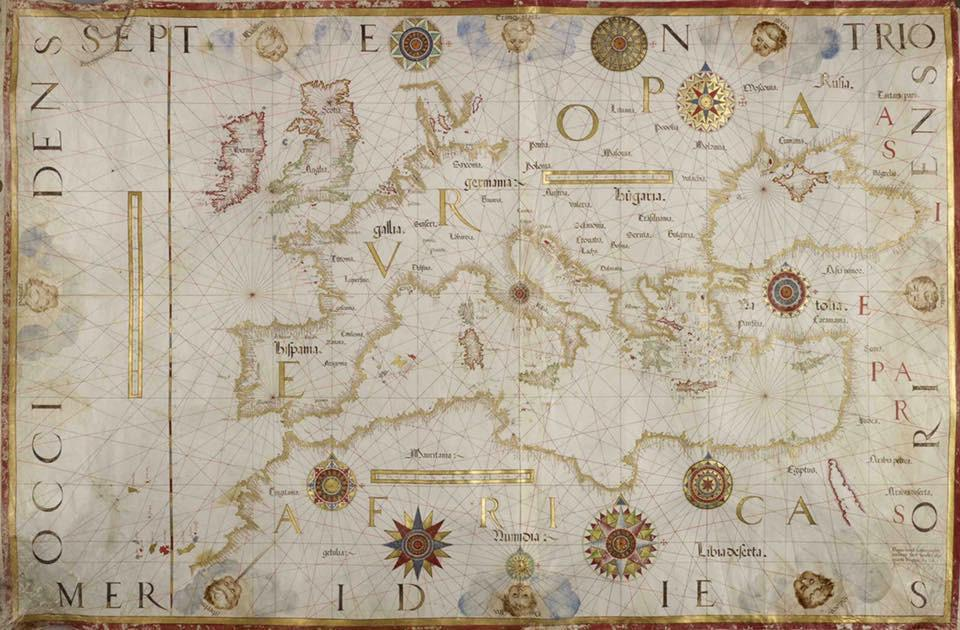
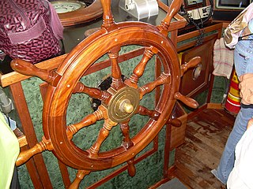

Innovazioni nautiche
Le innovazioni nel campo nautico hanno contribuito in modo significativo all'esplorazione e al commercio; le innovazioni più importanti sono le seguenti:
La bussola
L'invenzione della bussola si attribuisce ai cinesi, che la scoprirono intorno al VIII secolo dopo Cristo. All'inizio, era usata come spettacolo di attrazione, ma fu poi applicata alla navigazione. Intorno al XI secolo, la bussola giunse in Europa attraverso gli arabi e gli amalfitani, migliorando la sicurezza e l'accuratezza della navigazione. La bussola sfrutta il campo magnetico della Terra per indicare il nord magnetico. La Terra ha un proprio campo magnetico, che agisce come un gigantesco magnete, e l'ago magnetico della bussola si allinea con esso. Alla fine del XI secolo era ancora noto come ago calamitato e solo nel XIII secolo venne soprannominata bussola.

I portolani e le carte nautiche
L’origine dei portolani risale al Medioevo; sono stati una delle prime invenzioni nautiche che hanno permesso una navigazione più sicura e precisa. Originariamente, i portolani erano manuali antichissimi che riportavano informazioni utili per la navigazione, sotto forma di descrizioni dettagliate di rotte, pericoli, l'ingresso nei porti e l'ancoraggio. Le carte nautiche, un elemento fondamentale dei portolani, iniziarono a diffondersi a partire dal XIV secolo, con la Carta Pisana del 1290 considerata il primo documento. Queste carte descrivevano principalmente le coste del Mediterraneo, del Mar Nero e dell’Europa settentrionale, fornendo dettagli sulle località, i punti di rifornimento e le rotte di navigazione.


Il timone
Il timone, indispensabile strumento nella navigazione. In origine si governava la nave con l'aiuto di remi laterali, sistema molto antico già presente nell’antico Egitto, i quali servivano a far manovrare l'imbarcazione, ma non erano adatti per navi di maggiori dimensioni. Si passò quindi al timone centrale a poppa intorno al XII secolo. Successivamente, verso il Rinascimento, si utilizzarono timoni laterali doppi che garantivano maggiore maneggevolezza. Il timone a ruota fu l'introduzione più importante, con il vantaggio di rendere la navigazione più precisa e meno faticosa.

A cura di Cristian Cagnina